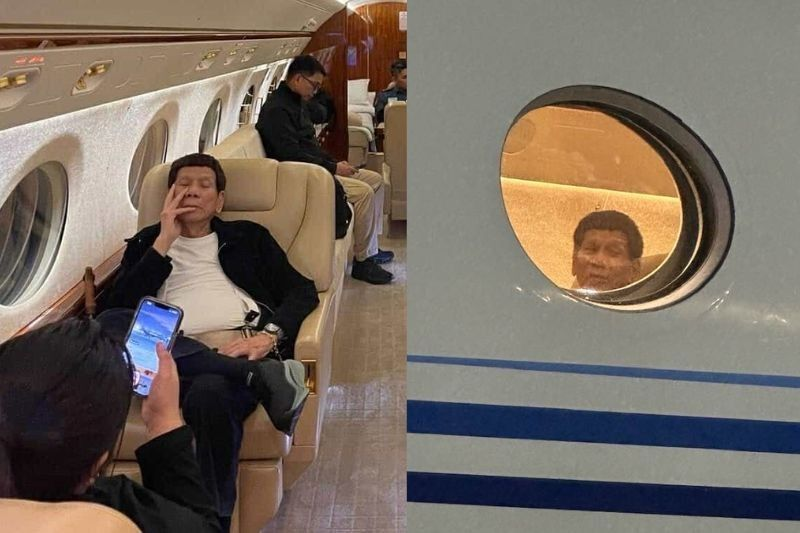

HONG KONG — Former Philippine President Rodrigo Duterte was on his way to the Netherlands on Tuesday to face International Criminal Court accusations that he committed crimes against humanity during his deadly war on drugs.
Duterte, 79, who left office in 2022, was arrested earlier on an Interpol warrant at the international airport in Manila after his arrival from Hong Kong.
Rights groups say tens of thousands of unarmed suspects were murdered in extrajudicial killings during Duterte’s crackdown on narcotics dealers, allegations he has denied. The populist politician campaigned heavily on his “drug war” policy while running for office in 2016, and it defined his presidency.
"The plane is en route to The Hague in the Netherlands, allowing the former president to face charges of crimes against humanity in relation to his bloody war on drugs," President Ferdinand Marcos Jr. said in a televised statement late Tuesday.
Philippine ex-leader Duterte en route to The Hague to face charges of crimes against humanity
Rights groups say tens of thousands of unarmed suspects were murdered in extrajudicial killings during Duterte’s war on drugs.
ICC's warrant of arrest for former President Rodrigo Duterte as publicized on their website on March 11, 2025. It was issued on March 7, 2025.
The International Criminal Court is based in The Hague.
Salvador Panelo, a former lawyer and spokesperson for Duterte during his presidency, said in a statement that Duterte’s arrest was unlawful and that he has no legal representation, Reuters reported.
Though the Philippines has not been a member of the International Criminal Court since it withdrew under Duterte in 2019, Marcos previously said his government would cooperate if Duterte’s arrest were sought by international police.
Duterte’s unannounced trip to the Chinese territory of Hong Kong, which is also not a member of the court, had raised speculation that he might be trying to evade arrest. But he said Sunday that he would accept the warrant if issued.
“What is my sin? I did everything in my time for peace and a peaceful life for the Filipino people,” Duterte, who remains highly influential in the Philippines, told thousands of Filipino workers at a campaign rally in Hong Kong ahead of Philippine midterm elections in May.
The rally was also attended by his daughter, current Vice President Sara Duterte, who was elected separately from Marcos in 2022 but allied with him during the campaign.

Duterte supporters outside the air base Tuesday, 2025-03-11. -Ezra Acayan
The ICC’s investigation into the drug-related killings spans from 2011, when Duterte was mayor of the southern city of Davao, to the country’s withdrawal from the court in 2019, a move that activists said was an effort to avoid accountability.
The court says it has jurisdiction in the Philippines over crimes that were allegedly committed before its withdrawal from the court.
According to official government figures, more than 6,200 people were killed in “anti-drug operations” during Duterte’s six-year term from 2016 to 2022, almost all of them drug sellers or users who officials say resisted arrest during raids.
Rights groups in the Philippines and others say those figures do not include thousands of others who were killed by police officers, agents of the police or unidentified assailants, including scores of children “who were either specifically targeted or were inadvertently shot during anti-drug raids, what authorities have called ‘collateral damage,’” according to Human Rights Watch.
ICC prosecutors say an estimated 12,000 to 30,000 people were killed in connection with Duterte’s war on drugs from 2016 to 2019, although the precise number is “difficult to ascertain.”
Police have denied any involvement in these additional deaths and rejected accusations of executions and cover-ups.
Only a handful of Philippine law enforcement officials have been convicted in connection with drug war deaths, prompting families of victims to seek justice internationally by filing a complaint with the ICC in 2018.

Police await Duterte's arrival at Ninoy Aquino International Airport in metro Manila.-Jam Sta Rosa
The ICC is a court of last resort that prosecutes genocide, war crimes and crimes against humanity when countries are unwilling or unable to do so.
The ICC suspended its investigation in late 2021 after the Philippines said that it was already investigating the same allegations and that the ICC therefore had no jurisdiction. Appeals judges at the ICC rejected that argument in July 2023, ruling that the court inquiry could proceed.
In November, the Philippines — whose president, Marcos, has feuded with Duterte as well as his own vice president, Duterte’s daughter — said for the first time that it would be obliged to comply if an arrest warrant for the elder Duterte were issued by Interpol, an international policing organization of which the Philippines is a member.